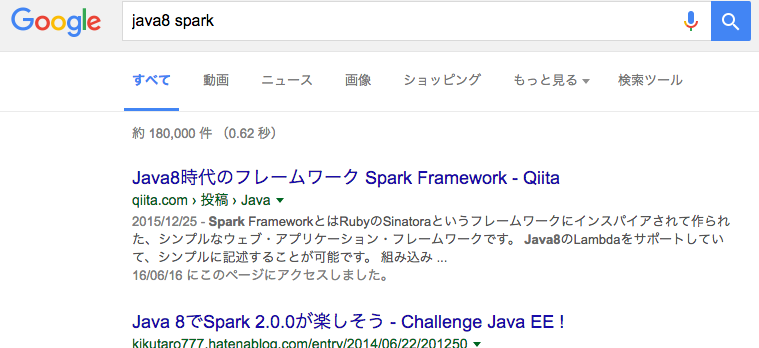
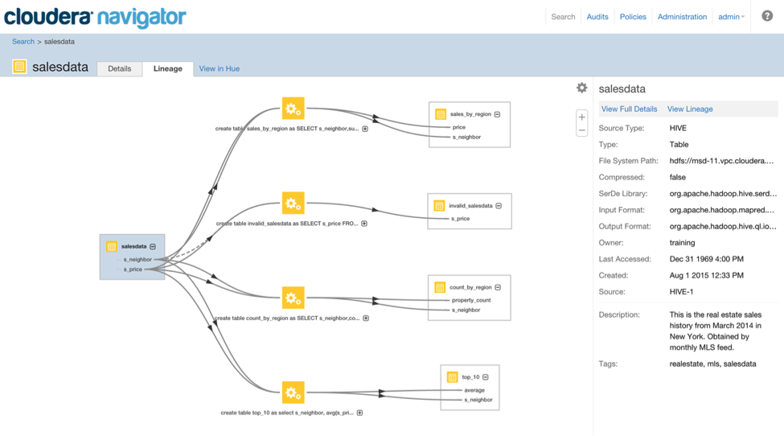

<!doctype html>
<html>
	<head>
		<meta charset="utf-8">
		<meta name="viewport" content="width=device-width, initial-scale=1.0, maximum-scale=1.0, user-scalable=no">

		<title>reveal.js</title>

		<link rel="stylesheet" href="css/reveal.css">
		<link rel="stylesheet" href="css/theme/black.css">

		<!-- Theme used for syntax highlighting of code -->
		<link rel="stylesheet" href="lib/css/zenburn.css">
		<script src="https://cdn.rawgit.com/knsv/mermaid/0.5.1/dist/mermaid.min.js"></script>
		<script>mermaid.initialize({startOnLoad:true});</script>
		<style>
			.reveal .slides  {
				text-align: left;
			}
			.reveal h1,
			.reveal h2,
			.reveal h3,
			.reveal h4,
			.reveal h5,
			.reveal h6 {
				text-transform: none;
			}
		</style>
		<!-- Printing and PDF exports -->
		<script>
			var link = document.createElement( 'link' );
			link.rel = 'stylesheet';
			link.type = 'text/css';
			link.href = window.location.search.match( /print-pdf/gi ) ? 'css/print/pdf.css' : 'css/print/paper.css';
			document.getElementsByTagName( 'head' )[0].appendChild( link );
		</script>
	</head>
	<body>
		<div class="reveal">
			<div class="slides">
		      <section data-markdown=""
            data-separator="^\n---$"
            data-separator-vertical="^\n>>>$">
        <script type="text/template">

Batch FrameworkとしてのApache Spark
----------------------------------

@koduki

---

## 自己紹介
- - -

</img>
- [@koduki](https://twitter.com/koduki)
- 天神あたりで働くJavaが好きなエンジニア。
- でもRubyの方がもーっと好きです。

---

## 今日話さないこと
- - -

- [Spark framework](http://sparkjava.com/)
</img>

---

## 今日話さないこと
- - -

- [SPARC](https://ja.wikipedia.org/wiki/SPARC)

</img>

---

## 今日話さないこと
- - -

- Apache Sparkによる機械学習
- APache Sparkによるストリーム入門

---

## 今日話すこと
- - -

- Java8でApache Sparkでバッチをどう書くか？

---

## Javaとバッチフレームワーク

##### コンテナ型

- Java EE jBatch(JSR-352)
- Hadoop(MapReduce, Spark)

##### プロセス型

- Spring Batch
- 自作 or フレームワークなんて使わない！

---

## Apache Sparkって何？
- - -

- Hadoopファミリの一つ。
- ポストHadoop MapReduce
- 分散並列環境でのジョブ実行/ストリーム処理が得意
- インメモリ処理が中心でMapReduceよりずっと高速
- ScalaやPythonでよく利用されるがJavaでも動く

---

# Javaでも動く！

---

## Java8で書くメリット
- - -

- Stream APIとの高い類似性 <- どっちもScala由来！
- 既存のJavaによるビジネスロジックを移植しやすい
- Scalaを導入するより、上司や周りを説得しやすい

---

## JavaによるSpark例
- - -

```[java]
// Driver
SparkConf sparkConf = new SparkConf()
		.setMaster("local")
		.setAppName("Example01");
JavaSparkContext sc = new JavaSparkContext(sparkConf);

// ここからExecutor
sc.parallelize(Arrays.asList(
		new Tuple2<>("Nanoha", 19),
		new Tuple2<>("Fate", 19),
		new Tuple2<>("Vivio", 9)))
		.filter(x -> x._2() < 10)
		.map(x -> "Magical girl " + x._1())
		.foreach(x -> System.out.println(x));

// Driver
sc.stop();
```

---

## Sparkの実行モデル
- - -

- 実はさっきのコードはマルチスレッドかつ分散環境で動いている
- Javaの通常プロセスであるDriverと分散処理プロセスであるExecutorに分かれる
- ExecutorではRDDと呼ばれる分散並列コレクションに対して処理を行う

---

## ExecutorとDriver
- - -

</img>

---

## 変換とアクション
- - -

- SparkにはRDDを別のRDDに変換する「変換」と、RDDに対して処理を行う「アクション」がある

- mapやfilterといった「変換」はStreamAPI同様に遅延実行なので、foreachやreduce、countといった「アクション」が走るまで実際の処理はされない

---

## よくある業務処理１
- - -

- 以下のようなフォーマットのファイルを読み込んで、地域別に集計をしたい

<table>
	<tr><th>地域</th><th>事業</th><th>人数</th></tr>
	<tr><td>東京</td><td>製造</td><td>100</td></tr>
	<tr><td>福岡</td><td>営業</td><td>140</td></tr>
	<tr><td>福岡</td><td>製造</td><td>10</td></tr>
</table>

---
## 地域別集計例

```[java]
        JavaRDD<Tuple3<String, String, Integer>> input = sc.textFile("item.csv")
								.map(line -> line.split(","))
								.map(xs -> new Tuple3<>(xs[0], xs[1], Integer.parseInt(xs[2])))

        input.mapToPair(xs -> new Tuple2(xs._1(), xs))
                .groupByKey()
                .map(xs -> {
                    // 型推論が何故かうまくいかない
                    Tuple2<String, Iterable<Tuple3<String, String, Integer>>> item = (Tuple2<String, Iterable<Tuple3<String, String, Integer>>>) xs;
                    Stream<Tuple3<String, String, Integer>> stream = StreamSupport.stream(item._2().spliterator(), true);
                    int sum = stream.collect(Collectors.summingInt(x -> x._3()));

                    return new Tuple2<>(item._1(), sum);
                })
                .foreach(x -> System.out.println(x));
```

結果:
```
(東京,100)
(福岡,150)
```

---

## よくある業務処理2
- - -

- Sparkってファイル処理でしょ？  うちのデータRDB上にあるんだよねー
- 大丈夫です。安心してください。SparkではDBにアクセスする方法があります
	- DataFrame
	- Sqoop

---

## DataFrame
- - -

- RDDでスキーマを設定できる高機能API
- StreamAPIライクなメソッドはもちろんSQLでアクセスすることも可能
- 複数のデータソースをとれる(RDB, JSON, CSV...)
- RDBとHDFS上のJSONファイルをJOINするとかもできる

---

## DataFrameによるRDBアクセス
- - -

```[java]
Map<String, String> options = new HashMap<>();
options.put(url, "jdbc:mysql://localhost");
options.put("dbtable", "users");
options.put("partitionColumn", "id");
options.put("lowerBound", 0);
options.put("upperBound",1000);
options.put("numPartitions", 100); // 100並列でSQLを投げる

DataFrame df = sc.read.format("jdbc").options(options).load();
df.select("age")
	.filter(x -> x < 17)
	.count();
```

---

## DataFrameの苦手なこと
- - -

- トランザクション周りは弱い
- RDBにアクセスする場合、JDBCなので性能問題に注意
- カラム数を増やすと結構遅くなる

---

## その他よく使うAPI
- - -

<table>
	<tr><td>map</td><td>普通のmap</td></tr>
	<tr><td>mapToPair</td><td>PairRDDを返す</td></tr>
	<tr><td>flatMap</td><td>mapの戻り値がListならflattenしたRDDを返す</td></tr>
	<tr><td>filter</td><td>任意の条件でフィルタしたRDDを返す</td></tr>
	<tr><td>groupByKey</td><td>キーでまとめたRDDを返す</td></tr>
	<tr><td>sortByKey</td><td>キーでソート</td></tr>
	<tr><td>zip</td><td>RDDをセットにしたRDDを返す</td></tr>
	<tr><td>zipWithIndex</td><td>RDDをセットにしたRDDを返す</td></tr>
	<tr><td>union</td><td>2つのRDDを結合したRDDを返す</td></tr>
</table>

---

## どうやって実行するのか？

- - -

- Javaコマンドからも実行できるが、通常はspark-submitコマンドを使う
- スケジューラにアプリケーションを配布して実行する
- Driver/Executorの処理が終わるまで返ってこないので、Bashや既存ジョブマネとも連携できる!

```[bash]
${SPARK_HOME}/bin/spark-submit \
  --master <master-url> \
  --class <main-class>
  --name <name>
  ... # other options
  <application-jar> \
  [application-arguments]
```

---

## なぜSparkか？
- - -

- 単に並列コレクション操作がしたいだけならStreamAPIで十分
- Hadoopファミリを使う理由はなんだろう？

---
## メリット１: 複数サーバに分散する
- - -

- 1台のマシンでは処理しきれないデータ量を取り扱える
- 冗長性や性能のために自前でアクティブアクティブ構成を作るのは結構面倒

---

## メリット2: バッチシステムとして作り込まれたツール群1

付属のSpark WebUIで動いてる処理や実行時間が可視化されてる

</img>

---

## メリット2: バッチシステムとして作り込まれたツール群2

Clodera Navigator使えばHDFS上でどんなファイルが、どのジョブで作られたかが分かる

</img>

---

## 書くときの注意点
- - -

- マルチスレッドであることを意識する
- 分散環境だることを意識する
- 遅延実行であることを意識する

---

## まとめ
- - -

- Apache Spark + Java8での開発は思ったより簡単。たぶん普通の業務バッチに使える
- ただし、Scalaによる事例ばかりなので情報収集が少し大変
- あと、Java8は型推論が無いのでTuple地獄でツラい
- クラスタの運用はツラいとも聞くので本格運用したらまた違うかも
        </script>
      </section>
			</div>
		</div>

		<script src="lib/js/head.min.js"></script>
		<script src="js/reveal.js"></script>


		<script>
			// More info https://github.com/hakimel/reveal.js#configuration
			Reveal.initialize({
				history: true,

				// More info https://github.com/hakimel/reveal.js#dependencies
				dependencies: [
					{ src: 'plugin/markdown/marked.js' },
					{ src: 'plugin/markdown/markdown.js' },
					{ src: 'plugin/notes/notes.js', async: true },
					{ src: 'plugin/highlight/highlight.js', async: true, callback: function() { hljs.initHighlightingOnLoad(); } }
				]
			});
		</script>
	</body>
</html>
